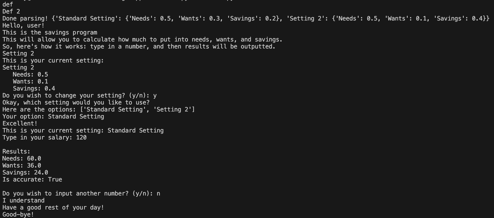

About the Program
As someone who wants an easy way to separate his pay into different bins (needs, wants, and savings), I needed a fast and efficient way to calculate the totals, so I thought why not create a program for that myself? Which is what I did?
UPDATE!
I decided to remake this program so it runs graphically instead of being console-based! I am using PyCharm as my development environment and using PyQt6 for the graphical interface.
Features
- Added greeting for user
- Added input for user to enter their pay
- Added calculations for needs, wants, and savings based on 50/30/20 rule
- Added output to display results to user
- ADDITION: Added option to change calculations based of 50/10/40 rule
Screenshots

Trial 1!

Trial 2!
Trial 3!
Development Status
Currently working on making the application run graphically using PyQt6.